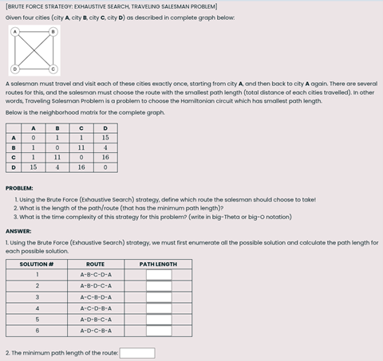
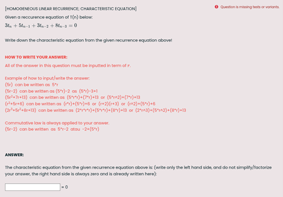

Utilizing STACK for Automatic Assessments in Algorithm Courses in Telkom University
Izzatul Ummah
This case study is for informational purposes only, does not constitute an endorsement of STACK by Telkom University, and does not represent the official views of Telkom University.
Background
Analysis of Algorithm Complexity (CAK2BAB2) and Algorithm Strategies (CAK2LAB3) courses are two-course sequence in the Informatics bachelor degree program in Telkom University, Indonesia, that are widely considered as difficult by our students, probably because of the courses' abstract nature in which only pseudocodes are used to describe and analysis a certain algorithm. Although the problem sets for the exams are relatively similar every year, many students still find it difficult to master the concepts. One of the solutions for this is to give standardize problem sets, very similar to the examples in the text books, but with randomized numbers so that each students will get different variants and therefore they won’t be able to copy other student's answer sheets. Every year we have approximately 500 students who take these courses. This is such a large number of students that manually creating a large number of problem sets, including the answer keys, is impossible without software to generate them automatically. This is where STACK comes in handy, particularly because Telkom University has made use of Moodle platform as our learning management system for almost a decade, thus implementing STACK quizzes in our institution does not require too much effort.
Utilizing STACK for “Algorithm Strategies” Course
The first STACK problem sets for Algorithm Strategies course in Telkom University were authored and implemented in year 2023. Algorithm Strategies course covers topics of six major algorithm strategies: brute force (and exhaustive search), greedy, divide-and-conquer, dynamic programming, backtracking, and branch-and-bound strategy. Each strategy is then demonstrated to tackle various problems (mainly optimization problems) such as the Travelling Salesman Problem, knapsack problem, job assignment problem, change-making problem, coin-row problem, scheduling problem, N-queen problem, hamiltonian circuit problem, graph coloring problem, closest pair problem, etc. [Reference: Anany Levitin, Introduction to the Design & Analysis of Algorithms]
The picture below is an example of our problem set in STACK question type in Moodle (topic: brute force / exhaustive search strategy for traveling salesman problem). The numbers in the neighborhood matrix are randomized using the native function rand() in Maxima and stored in random variables.

For all the questions in our question bank, we set all [[input:ans1]] with “Input type = Numerical” and “Forbid float = YES”, because the answers must be in integer form only. An exception is made for the problem sets which involves calculating distance between two points using the Euclidian distance formula and resulting in square root of a number. For this case, we set “Forbid float = NO”, and “Allowed words = sqrt”. Students are allowed to input their answer in the form of surd for irrational number without the need to round it, and therefore they don't need to use calculators to do these quizzes.
This course was the very first course in Telkom University to implement STACK question type, and we actually did not have time to introduce and familiarize our students to the Maxima language syntax. Most of our students do not even know that the answers they are inputting is a mathematical expression in Maxima language. Fortunately, because all of the answers are in the form of integer or surd, it is not really difficult for the students to adapt themselves with our STACK quizzes. We just give this simple instruction to our students on how to write their answer in surd number: √8 can be written as sqrt(8) or 2*sqrt(2) or 2^(3/2). This is the advantage of using STACK/Maxima question type, students can input their answer in many different ways.
So far, we have authorized 19 questions using STACK for this course: 4 questions for brute force strategy, 5 questions for greedy strategy, 4 questions for divide-and-conquer strategy, 3 questions for dynamic programming strategy, and 3 questions for branch-and-bound strategy.
We still haven't implemented STACK quizzes for backtracking strategy, due to the higher level of difficulty on how to design the questions and to organize the answers for this topic. We still haven't implemented problem sets for fractional knapsack using greedy by density as well, because the answer must be in a fractional form or a floating point form. Also, a certain consideration must be put when designing questions for branch-and-bound strategy because this strategy has best-case scenario, worst-case scenario, and average-case scenario to find the optimum solution. This means when we randomize the numbers in our questions, each student will get different scenarios in the process of finding the optimum solution. So how do we design STACK questions for this kind of problem? Here, our proposed solution is to limit ourselves to the best-case scenario. We only provide the least number needed for input text boxes (i.e., the [[input:ans1]]), and then we will ask this question to the students:
From your answers so far, decide whether the optimum solution has been found or not! (write 0 if the optimum solution has not been found yet, write 1 if the optimum solution has been found).
Another way to get around this is to make the student's answer in the form of list (array) which has dynamic length. However, at the time when we started developing this STACK quizzes, we thought that our students is still not familiar with Maxima language syntax, thus we didn't choose this approach.
Utilizing STACK for “Analysis of Algorithm Complexity” Course
Two years after the success of STACK implementation for Algorithm Strategies course, we proceeded to implement STACK quizzes for Analysis of Algorithm Complexity course (which is a predecessor or prerequisite to the Algorithm Strategies course). In Analysis of Algorithm Complexity we explore several more types of inputted answer in STACK, specifically, the algebraic expression form. The Analysis of Algorithm Complexity course covers topics such as algorithm complexity (time and space efficiency), order of growth and asymptotic notations, complexity analysis of iterative algorithm, and complexity analysis of recursive algorithm. [Reference: Richard Neapolitan, Foundations of Algorithms]
This picture below is a problem set example for the topic of complexity analysis of recursive algorithm (using characteristic equation to solve homogeneous linear recurrence). Every coefficients that is attached to variables tn, tn-1, tn-2, and tn-3 are randomized using the native function rand() in Maxima and stored in random variables. For this question, we set the [[input:ans1]] with “Input type = Algebraic input” and “Forbid float = YES”, because the answers must be inputted in algebraic expression which contains term of r.

So far, we have authorized 13 questions using STACK for this course: 3 questions for analysis of time complexity, 4 questions for analysis of iterative algorithms, and 6 questions for analysis of recursive algorithms. And again, because we did not have time to introduce and familiarize our students to the Maxima language syntax, we just give our students a simple tutorial on how to write their answers in the form of algebraic expression. This tutorial is written inside each questions, and so the students do not need to look for it elsewhere.
Evaluation and Conclusion
Informally, we consider our implementation of STACK quizzes for our two courses to be quite successful. Our STACK quizzes has been used for every year since it was developed until now, and many lecturers in Telkom University have responded positively to this, mainly because it has helped reduce the burden of manually grading students' answers for weekly quiz/homework. However, for the middle exam and final exam we still use paper-based system because we think that with STACK questions, the students are given a step-by-step guidance on how they should organize their answers, and thus limiting their creativity in solving a problem using their own genuine ideas. Therefore we choose to not rely fully on STACK, and still give room for paper-based exams (the middle exam and final exam). Of course, there are still many rooms for improvement on how to fully integrate STACK into our courses. Our next plan is to implement STACK quizzes for other courses such as Discrete Mathematics, Artificial Intelligence, Machine Learning, etc.